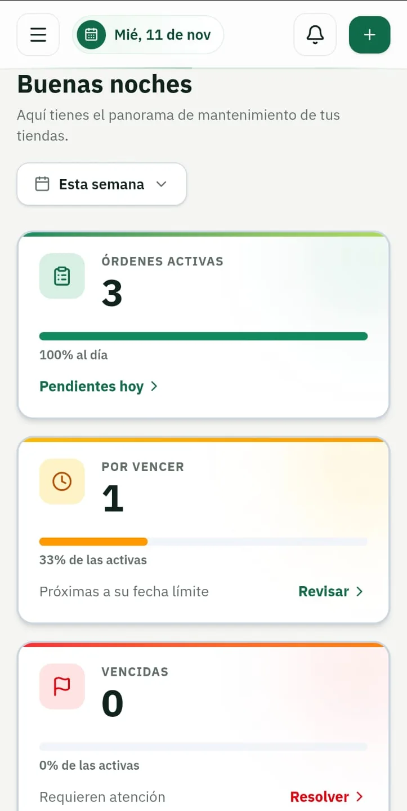
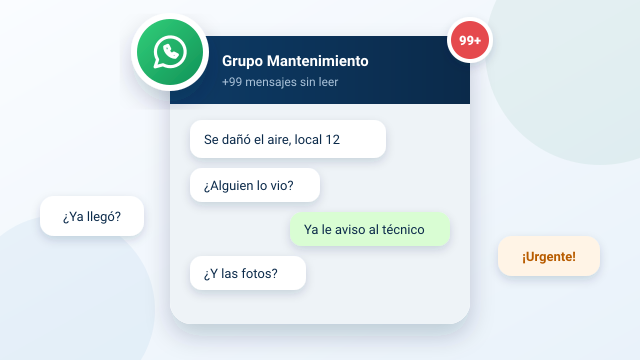
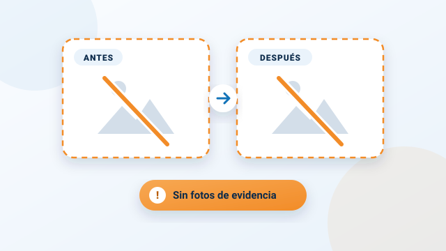
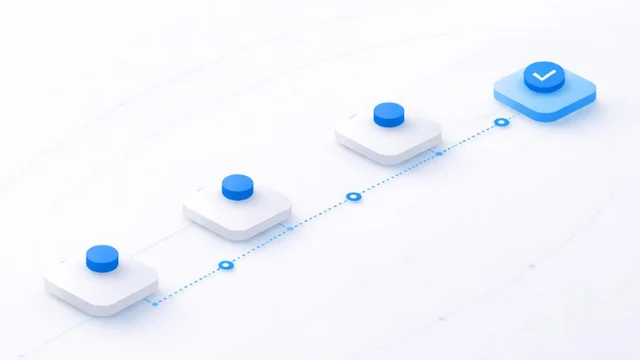
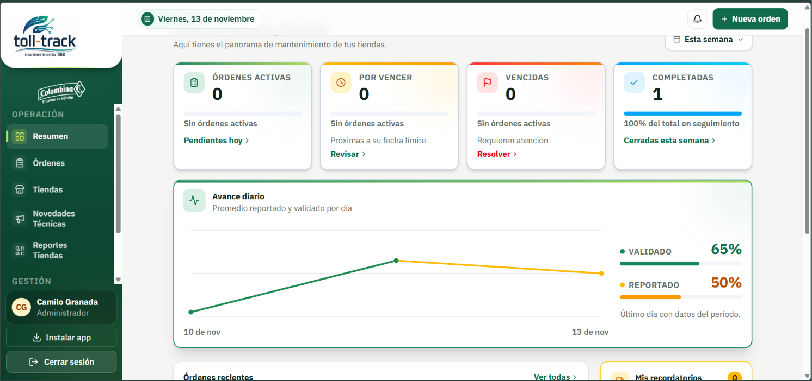
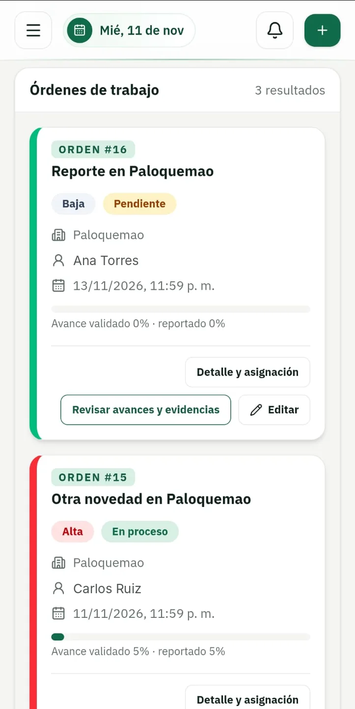
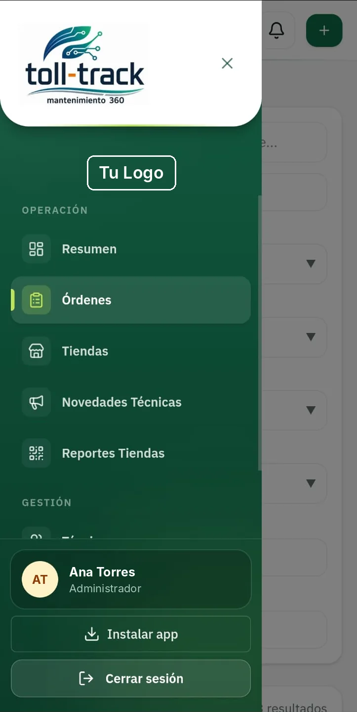
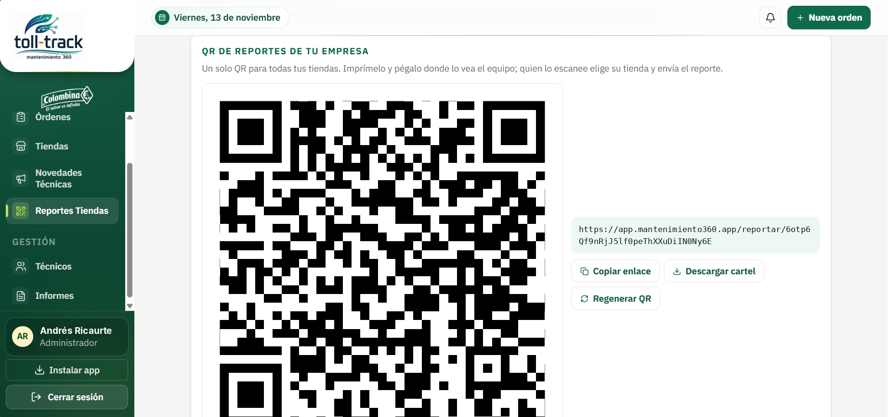
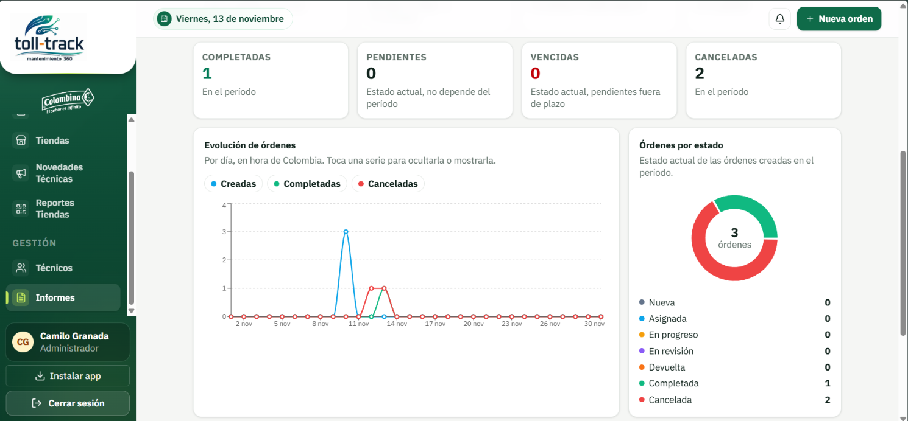

Administrador
- Crea y asigna órdenes de trabajo
- Gestiona las tiendas y los técnicos de su empresa
- Revisa las evidencias y aprueba los trabajos
- Consulta reportes por tienda y recibe notificaciones
Plataforma de mantenimiento locativo
Reportes por QR, órdenes de trabajo, técnicos con evidencia fotográfica y seguimiento de cada sede, desde el celular o el computador.
Hecha para empresas con varias tiendas, locales o sedes.

El problema
Si el mantenimiento de tus locales se maneja con chats y llamadas, seguro te suena esto.

La falla llega en un chat, se pierde entre mensajes y nadie sabe con certeza si ya se atendió.

El técnico dice que terminó, pero no hay fotos de cómo estaba el daño ni de cómo quedó.

No existe un historial por tienda: no se sabe qué se arregló, quién lo hizo ni cuándo.
Cómo funciona
Imprime el QR de tu empresa y pégalo donde lo vea el equipo. Quien lo escanea elige su tienda y reporta la falla en segundos.
El reporte se convierte en una orden de la tienda correspondiente, asignada a un técnico.
Recibe la orden en su celular, hace el trabajo y sube fotos como evidencia.
Revisa el trabajo y las fotos, aprueba la orden y queda el historial de la tienda.
Funciones por rol
La aplicación
Así se ve la aplicación en uso, en el computador y en el celular.



Reportes por QR
Tu empresa tiene un código QR para todas sus tiendas. Lo imprimes y lo pegas donde lo vea el equipo. Quien lo escanea elige su tienda y envía el reporte del incidente o la solicitud de mantenimiento.

Informes
Mira cuántas órdenes se crean y se completan, en qué tiendas se concentran y cómo vas frente al período anterior.

Multiempresa
Toll-Track es una plataforma compartida, pero los datos de cada empresa están separados. Tus tiendas, técnicos, órdenes y fotos solo son visibles para los usuarios de tu empresa.
Esto permite que la plataforma atienda a varias empresas a la vez sin mezclar su información.
Instalable
Toll-Track funciona desde el navegador y se puede agregar a la pantalla de inicio como una app más. No hay que descargar nada de Google Play ni de App Store.
Seguridad
Estas son las medidas con las que cuenta la plataforma hoy.
Cada empresa accede únicamente a su propia información.
El administrador y el técnico tienen permisos distintos dentro de la plataforma.
Se registran las acciones realizadas en la plataforma.
Las fotos de evidencia no son públicas: se consultan con enlaces temporales.
La comunicación con la plataforma viaja por HTTPS.
¿Tu empresa necesita más detalle sobre cómo se manejan los datos? Escríbenos y lo conversamos.
Quiénes somos
En Mantenimiento 360 desarrollamos Toll-Track, una plataforma web para ordenar el mantenimiento de tiendas y locales: reportes por QR, órdenes de trabajo, técnicos con evidencia fotográfica y trazabilidad por sede. Estamos en Bogotá y ya acompañamos a una empresa cliente en su operación diaria.
Nuestros clientes
Planes y precios
Cada empresa es distinta. Cuéntanos cuántas tiendas y técnicos tienes y te armamos una propuesta.
Para empresas con pocas tiendas o locales que quieren dejar el WhatsApp y el papel.
Cotiza con nosotros
Solicitar demoPara empresas con varias sedes y un equipo de técnicos que necesita orden y trazabilidad.
Cotiza con nosotros
Solicitar demoPara empresas con muchas tiendas que necesitan acompañamiento en la puesta en marcha.
Cotiza con nosotros
Solicitar demoEl valor depende del número de tiendas y usuarios.
Preguntas frecuentes
Es una plataforma web para gestionar el mantenimiento de tiendas y locales: reportes por QR, órdenes de trabajo, técnicos, evidencia fotográfica, notificaciones y reportes por sede.
No. Funciona desde el navegador del celular o del computador. Si quieres, puedes agregarla a la pantalla de inicio del celular como una app, sin pasar por una tienda de aplicaciones.
No. Los técnicos reciben y atienden las órdenes desde su celular, y suben las fotos de evidencia desde ahí mismo.
No. Los datos de cada empresa están separados y cada usuario accede solo a la información de su empresa y según su rol.
No. Las fotos son privadas y se consultan mediante enlaces temporales.
El valor depende del tamaño de tu operación, principalmente del número de tiendas y usuarios. Escríbenos y te enviamos una propuesta.
Sí. Te mostramos la plataforma con una empresa de demostración con datos ficticios y resolvemos tus dudas.
Para empresas que mantienen varias tiendas, locales o sedes y necesitan ordenar los reportes, a los técnicos y el historial de cada punto.
Escríbenos por WhatsApp o por correo. Te mostramos la plataforma con datos de ejemplo y conversamos sobre tu operación.
También por correo: ventas@mantenimiento360.app · WhatsApp: 323 367 0402